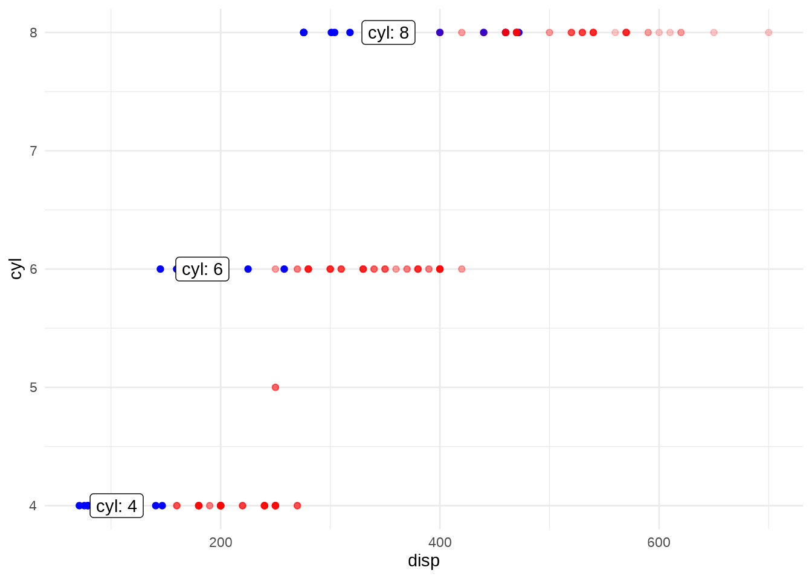

20.2 The build step
This is the function body of ggplot_build():
ggplot2:::ggplot_build.ggplotfunction (plot)
{
plot <- plot_clone(plot)
if (length(plot$layers) == 0) {
plot <- plot + geom_blank()
}
layers <- plot$layers
data <- rep(list(NULL), length(layers))
scales <- plot$scales
data <- by_layer(function(l, d) l$layer_data(plot$data),
layers, data, "computing layer data")
data <- by_layer(function(l, d) l$setup_layer(d, plot), layers,
data, "setting up layer")
layout <- create_layout(plot$facet, plot$coordinates)
data <- layout$setup(data, plot$data, plot$plot_env)
data <- by_layer(function(l, d) l$compute_aesthetics(d, plot),
layers, data, "computing aesthetics")
data <- lapply(data, scales_transform_df, scales = scales)
scale_x <- function() scales$get_scales("x")
scale_y <- function() scales$get_scales("y")
layout$train_position(data, scale_x(), scale_y())
data <- layout$map_position(data)
data <- by_layer(function(l, d) l$compute_statistic(d, layout),
layers, data, "computing stat")
data <- by_layer(function(l, d) l$map_statistic(d, plot),
layers, data, "mapping stat to aesthetics")
scales_add_missing(plot, c("x", "y"), plot$plot_env)
data <- by_layer(function(l, d) l$compute_geom_1(d), layers,
data, "setting up geom")
data <- by_layer(function(l, d) l$compute_position(d, layout),
layers, data, "computing position")
layout$reset_scales()
layout$train_position(data, scale_x(), scale_y())
layout$setup_panel_params()
data <- layout$map_position(data)
npscales <- scales$non_position_scales()
if (npscales$n() > 0) {
lapply(data, scales_train_df, scales = npscales)
data <- lapply(data, scales_map_df, scales = npscales)
}
data <- by_layer(function(l, d) l$compute_geom_2(d), layers,
data, "setting up geom aesthetics")
data <- by_layer(function(l, d) l$finish_statistics(d), layers,
data, "finishing layer stat")
data <- layout$finish_data(data)
plot$labels$alt <- get_alt_text(plot)
structure(list(data = data, layout = layout, plot = plot),
class = "ggplot_built")
}
<bytecode: 0x55a3b01b6628>
<environment: namespace:ggplot2>It takes the ggplot object as input, and transforms the user-provided data to a drawing-ready data (+ some other auxiliary/meta-data like information about the layout). You can see that the drawing-ready data data is built up incrementally (much like data wrangling minus pipes):
as.list(body(ggplot2:::ggplot_build.ggplot))[[1]]
`{`
[[2]]
plot <- plot_clone(plot)
[[3]]
if (length(plot$layers) == 0) {
plot <- plot + geom_blank()
}
[[4]]
layers <- plot$layers
[[5]]
data <- rep(list(NULL), length(layers))
[[6]]
scales <- plot$scales
[[7]]
data <- by_layer(function(l, d) l$layer_data(plot$data), layers,
data, "computing layer data")
[[8]]
data <- by_layer(function(l, d) l$setup_layer(d, plot), layers,
data, "setting up layer")
[[9]]
layout <- create_layout(plot$facet, plot$coordinates)
[[10]]
data <- layout$setup(data, plot$data, plot$plot_env)
[[11]]
data <- by_layer(function(l, d) l$compute_aesthetics(d, plot),
layers, data, "computing aesthetics")
[[12]]
data <- lapply(data, scales_transform_df, scales = scales)
[[13]]
scale_x <- function() scales$get_scales("x")
[[14]]
scale_y <- function() scales$get_scales("y")
[[15]]
layout$train_position(data, scale_x(), scale_y())
[[16]]
data <- layout$map_position(data)
[[17]]
data <- by_layer(function(l, d) l$compute_statistic(d, layout),
layers, data, "computing stat")
[[18]]
data <- by_layer(function(l, d) l$map_statistic(d, plot), layers,
data, "mapping stat to aesthetics")
[[19]]
scales_add_missing(plot, c("x", "y"), plot$plot_env)
[[20]]
data <- by_layer(function(l, d) l$compute_geom_1(d), layers,
data, "setting up geom")
[[21]]
data <- by_layer(function(l, d) l$compute_position(d, layout),
layers, data, "computing position")
[[22]]
layout$reset_scales()
[[23]]
layout$train_position(data, scale_x(), scale_y())
[[24]]
layout$setup_panel_params()
[[25]]
data <- layout$map_position(data)
[[26]]
npscales <- scales$non_position_scales()
[[27]]
if (npscales$n() > 0) {
lapply(data, scales_train_df, scales = npscales)
data <- lapply(data, scales_map_df, scales = npscales)
}
[[28]]
data <- by_layer(function(l, d) l$compute_geom_2(d), layers,
data, "setting up geom aesthetics")
[[29]]
data <- by_layer(function(l, d) l$finish_statistics(d), layers,
data, "finishing layer stat")
[[30]]
data <- layout$finish_data(data)
[[31]]
plot$labels$alt <- get_alt_text(plot)
[[32]]
structure(list(data = data, layout = layout, plot = plot), class = "ggplot_built")20.2.1 Data preparation
The data from the ggplot is prepared in a special format for each layer (essentially, just a dataframe with a predictable set of column names).
A layer (specifically, the output of ggplot2::layer()) can provide data in one of three ways:
- Inherited from the data supplied to
ggplot() - Supplied directly from the layer’s
dataargument - A function that returns a data when applied to the global data
data_demo_p <- ggplot(mtcars, aes(disp, cyl)) +
# 1) Inherited data
geom_point(color = "blue") +
# 2) Data supplied directly
geom_point(
color = "red", alpha = .2,
data = mpg %>%
mutate(disp = displ * 100)
) +
# 3) Function to be applied to inherited data
geom_label(
aes(label = paste("cyl:", cyl)),
data = . %>%
group_by(cyl) %>%
summarize(disp = mean(disp))
)
data_demo_p
Inside the layers element of the ggplot are Layer objects which hold information about each layer:
data_demo_p$layers
map( data_demo_p$layers, class )And the calculated data from each layer can be accessed with layer_data() method of the Layer object:
ggplot2:::Layer$layer_data<ggproto method>
<Wrapper function>
function (...)
layer_data(..., self = self)
<Inner function (f)>
function (self, plot_data)
{
if (is.waive(self$data)) {
data <- plot_data
}
else if (is.function(self$data)) {
data <- self$data(plot_data)
if (!is.data.frame(data)) {
cli::cli_abort("{.fn layer_data} must return a {.cls data.frame}")
}
}
else {
data <- self$data
}
if (is.null(data) || is.waive(data))
data
else unrowname(data)
}data_demo_p$layers[[1]]$layer_data(data_demo_p$data) mpg cyl disp hp drat wt qsec vs am gear carb
1 21.0 6 160.0 110 3.90 2.620 16.46 0 1 4 4
2 21.0 6 160.0 110 3.90 2.875 17.02 0 1 4 4
3 22.8 4 108.0 93 3.85 2.320 18.61 1 1 4 1
4 21.4 6 258.0 110 3.08 3.215 19.44 1 0 3 1
5 18.7 8 360.0 175 3.15 3.440 17.02 0 0 3 2
6 18.1 6 225.0 105 2.76 3.460 20.22 1 0 3 1
7 14.3 8 360.0 245 3.21 3.570 15.84 0 0 3 4
8 24.4 4 146.7 62 3.69 3.190 20.00 1 0 4 2
9 22.8 4 140.8 95 3.92 3.150 22.90 1 0 4 2
10 19.2 6 167.6 123 3.92 3.440 18.30 1 0 4 4
11 17.8 6 167.6 123 3.92 3.440 18.90 1 0 4 4
12 16.4 8 275.8 180 3.07 4.070 17.40 0 0 3 3
13 17.3 8 275.8 180 3.07 3.730 17.60 0 0 3 3
14 15.2 8 275.8 180 3.07 3.780 18.00 0 0 3 3
15 10.4 8 472.0 205 2.93 5.250 17.98 0 0 3 4
16 10.4 8 460.0 215 3.00 5.424 17.82 0 0 3 4
17 14.7 8 440.0 230 3.23 5.345 17.42 0 0 3 4
18 32.4 4 78.7 66 4.08 2.200 19.47 1 1 4 1
19 30.4 4 75.7 52 4.93 1.615 18.52 1 1 4 2
20 33.9 4 71.1 65 4.22 1.835 19.90 1 1 4 1
21 21.5 4 120.1 97 3.70 2.465 20.01 1 0 3 1
22 15.5 8 318.0 150 2.76 3.520 16.87 0 0 3 2
23 15.2 8 304.0 150 3.15 3.435 17.30 0 0 3 2
24 13.3 8 350.0 245 3.73 3.840 15.41 0 0 3 4
25 19.2 8 400.0 175 3.08 3.845 17.05 0 0 3 2
26 27.3 4 79.0 66 4.08 1.935 18.90 1 1 4 1
27 26.0 4 120.3 91 4.43 2.140 16.70 0 1 5 2
28 30.4 4 95.1 113 3.77 1.513 16.90 1 1 5 2
29 15.8 8 351.0 264 4.22 3.170 14.50 0 1 5 4
30 19.7 6 145.0 175 3.62 2.770 15.50 0 1 5 6
31 15.0 8 301.0 335 3.54 3.570 14.60 0 1 5 8
32 21.4 4 121.0 109 4.11 2.780 18.60 1 1 4 2data_demo_p$layers[[2]]$layer_data(data_demo_p$data)# A tibble: 234 × 12
manufacturer model displ year cyl trans drv cty hwy fl class
<chr> <chr> <dbl> <int> <int> <chr> <chr> <int> <int> <chr> <chr>
1 audi a4 1.8 1999 4 auto… f 18 29 p comp…
2 audi a4 1.8 1999 4 manu… f 21 29 p comp…
3 audi a4 2 2008 4 manu… f 20 31 p comp…
4 audi a4 2 2008 4 auto… f 21 30 p comp…
5 audi a4 2.8 1999 6 auto… f 16 26 p comp…
6 audi a4 2.8 1999 6 manu… f 18 26 p comp…
7 audi a4 3.1 2008 6 auto… f 18 27 p comp…
8 audi a4 quattro 1.8 1999 4 manu… 4 18 26 p comp…
9 audi a4 quattro 1.8 1999 4 auto… 4 16 25 p comp…
10 audi a4 quattro 2 2008 4 manu… 4 20 28 p comp…
# ℹ 224 more rows
# ℹ 1 more variable: disp <dbl>data_demo_p$layers[[3]]$layer_data(data_demo_p$data)# A tibble: 3 × 2
cyl disp
<dbl> <dbl>
1 4 105.
2 6 183.
3 8 353.This is where the data transformation journey begins inside the plot method:
body(ggplot2:::ggplot_build.ggplot)[[5]]data <- rep(list(NULL), length(layers))body(ggplot2:::ggplot_build.ggplot)[[8]]data <- by_layer(function(l, d) l$setup_layer(d, plot), layers,
data, "setting up layer")For data_demo_p, the data variable after step 8 looks like this:
ggtrace_inspect_vars(
x = data_demo_p,
method = ggplot2:::ggplot_build.ggplot,
at = 9,
vars = "data"
)[[1]]
mpg cyl disp hp drat wt qsec vs am gear carb
1 21.0 6 160.0 110 3.90 2.620 16.46 0 1 4 4
2 21.0 6 160.0 110 3.90 2.875 17.02 0 1 4 4
3 22.8 4 108.0 93 3.85 2.320 18.61 1 1 4 1
4 21.4 6 258.0 110 3.08 3.215 19.44 1 0 3 1
5 18.7 8 360.0 175 3.15 3.440 17.02 0 0 3 2
6 18.1 6 225.0 105 2.76 3.460 20.22 1 0 3 1
7 14.3 8 360.0 245 3.21 3.570 15.84 0 0 3 4
8 24.4 4 146.7 62 3.69 3.190 20.00 1 0 4 2
9 22.8 4 140.8 95 3.92 3.150 22.90 1 0 4 2
10 19.2 6 167.6 123 3.92 3.440 18.30 1 0 4 4
11 17.8 6 167.6 123 3.92 3.440 18.90 1 0 4 4
12 16.4 8 275.8 180 3.07 4.070 17.40 0 0 3 3
13 17.3 8 275.8 180 3.07 3.730 17.60 0 0 3 3
14 15.2 8 275.8 180 3.07 3.780 18.00 0 0 3 3
15 10.4 8 472.0 205 2.93 5.250 17.98 0 0 3 4
16 10.4 8 460.0 215 3.00 5.424 17.82 0 0 3 4
17 14.7 8 440.0 230 3.23 5.345 17.42 0 0 3 4
18 32.4 4 78.7 66 4.08 2.200 19.47 1 1 4 1
19 30.4 4 75.7 52 4.93 1.615 18.52 1 1 4 2
20 33.9 4 71.1 65 4.22 1.835 19.90 1 1 4 1
21 21.5 4 120.1 97 3.70 2.465 20.01 1 0 3 1
22 15.5 8 318.0 150 2.76 3.520 16.87 0 0 3 2
23 15.2 8 304.0 150 3.15 3.435 17.30 0 0 3 2
24 13.3 8 350.0 245 3.73 3.840 15.41 0 0 3 4
25 19.2 8 400.0 175 3.08 3.845 17.05 0 0 3 2
26 27.3 4 79.0 66 4.08 1.935 18.90 1 1 4 1
27 26.0 4 120.3 91 4.43 2.140 16.70 0 1 5 2
28 30.4 4 95.1 113 3.77 1.513 16.90 1 1 5 2
29 15.8 8 351.0 264 4.22 3.170 14.50 0 1 5 4
30 19.7 6 145.0 175 3.62 2.770 15.50 0 1 5 6
31 15.0 8 301.0 335 3.54 3.570 14.60 0 1 5 8
32 21.4 4 121.0 109 4.11 2.780 18.60 1 1 4 2
[[2]]
# A tibble: 234 × 12
manufacturer model displ year cyl trans drv cty hwy fl class
<chr> <chr> <dbl> <int> <int> <chr> <chr> <int> <int> <chr> <chr>
1 audi a4 1.8 1999 4 auto… f 18 29 p comp…
2 audi a4 1.8 1999 4 manu… f 21 29 p comp…
3 audi a4 2 2008 4 manu… f 20 31 p comp…
4 audi a4 2 2008 4 auto… f 21 30 p comp…
5 audi a4 2.8 1999 6 auto… f 16 26 p comp…
6 audi a4 2.8 1999 6 manu… f 18 26 p comp…
7 audi a4 3.1 2008 6 auto… f 18 27 p comp…
8 audi a4 quattro 1.8 1999 4 manu… 4 18 26 p comp…
9 audi a4 quattro 1.8 1999 4 auto… 4 16 25 p comp…
10 audi a4 quattro 2 2008 4 manu… 4 20 28 p comp…
# ℹ 224 more rows
# ℹ 1 more variable: disp <dbl>
[[3]]
# A tibble: 3 × 2
cyl disp
<dbl> <dbl>
1 4 105.
2 6 183.
3 8 353.For the expository plot p from the book, the data variable after step 8 looks like the original mpg data:
ggtrace_inspect_vars(
x = p,
method = ggplot2:::ggplot_build.ggplot,
at = 9,
vars = "data"
) %>%
map(head)20.2.2 Data transformation
20.2.2.1 PANEL variable and aesthetic mappings
Continuing with the book example, the data is augmented with the PANEL variable at Step 11:
body(ggplot2:::ggplot_build.ggplot)[[11]]
ggtrace_inspect_vars(
x = p,
method = ggplot2:::ggplot_build.ggplot,
at = 12,
vars = "data"
) %>%
map(head)And then the group variable appears at Step 12, which is also when aesthetics get “mapped” (= just mutate(), essentially):
body(ggplot2:::ggplot_build.ggplot)[[12]]
ggtrace_inspect_vars(
x = p,
method = ggplot2:::ggplot_build.ggplot,
at = 13,
vars = "data"
) %>%
map(head)20.2.2.2 Scales
Then, scales are applied in Step 13. This leaves the data unchanged for the original plot:
body(ggplot2:::ggplot_build.ggplot)[[13]]
ggtrace_inspect_vars(
x = p,
method = ggplot2:::ggplot_build.ggplot,
at = 14,
vars = "data"
) %>%
map(head)But the effect can be seen with something like scale_x_log10():
ggtrace_inspect_vars(
x = p + scale_x_log10(),
method = ggplot2:::ggplot_build.ggplot,
at = 14,
vars = "data"
) %>%
map(head, 3)Out-of-bounds handling happens down the line, at Step 17:
body(ggplot2:::ggplot_build.ggplot)[[17]]
ggtrace_inspect_vars(
x = p + xlim(2, 8), # or scale_x_continuous(oob = scales::oob_censor)
method = ggplot2:::ggplot_build.ggplot,
at = 18,
vars = "data"
) %>%
map(head, 3)20.2.2.3 Stat
Stat transformation happens right after, at Step 18 (this is why understanding out-of-bounds handling and scale transformation is important!)
body(ggplot2:::ggplot_build.ggplot)[[18]]
ggtrace_inspect_vars(
x = p,
method = ggplot2:::ggplot_build.ggplot,
at = 19,
vars = "data"
) %>%
map(head, 3)Note how this point on the data for two layers look different. This is because geom_point() and geom_smooth() have different Stats.
class( geom_point()$stat )[1] "StatIdentity" "Stat" "ggproto" "gg" class( geom_smooth()$stat )[1] "StatSmooth" "Stat" "ggproto" "gg" 20.2.2.4 Position
At Step 22, positions are adjusted (jittering, dodging, stacking, etc.). We gave geom_point() a jitter so we see that reflected for the first layer:
body(ggplot2:::ggplot_build.ggplot)[[22]]
ggtrace_inspect_vars(
x = p,
method = ggplot2:::ggplot_build.ggplot,
at = 23,
vars = "data"
) %>%
map(head, 3)20.2.3 Output
The final state of the data after ggplot_build() is stored in the data element of the output of ggplot_build():
ggplot_build(p)$data %>%
map(head, 3)ggplot_build() also returns the trained layout of the plot (scales, panels, etc.) in the layout element, as well as the original ggplot object in the plot element:
lapply( ggplot_build(p), class )20.2.4 Explore
The building of p
ggtrace_inspect_vars(
x = p,
method = ggplot2:::ggplot_build.ggplot,
vars = "data"
) %>%
map(map, head, 3)
The making of p + scale_x_log10(limits = c(2, 5), oob = scales::oob_censor)
ggtrace_inspect_vars(
x = p + scale_x_log10(limits = c(2, 5), oob = scales::oob_censor),
method = ggplot2:::ggplot_build.ggplot,
vars = "data"
) %>%
map(map, head, 3)